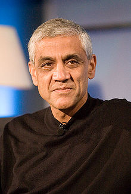

Khosla's father was an officer in the Indian Army and was posted at New Delhi, India.
Khosla read about the founding of Intel in Electronic Engineering Times at the age of fourteen and this inspired him to pursue technology as a career. He attended Mount St Mary's School in Delhi. He went on to receive multiple degrees from the Indian Institute of Technology Delhi (Bachelor of Technology in Electrical Engineering), Carnegie Mellon University (Masters in Biomedical Engineering), and Stanford Graduate School of Business (MBA).
In 1980, after post-graduating from Stanford University, Khosla worked for electronic design automation company Daisy Systems.
In 1982, Khosla co-founded Sun Microsystems (SUN is the acronym for the Stanford University Network), along with Stanford classmates Scott McNealy, Andy Bechtolsheim, andUC Berkeley computer science graduate student Bill Joy. Khosla served as the first chairman and CEO of Sun Microsystems from 1982 to 1984, when he left the company to become a venture capitalist.
In 1987, Khosla joined the venture capital firm Kleiner Perkins Caufield & Byers as a general partner. At Kleiner, Khosla became a recognized venture capitalist, with several successful early stage investments. Khosla also played a key role with several of the tech industry's most spectacular failures, including Asera, Dynabook, BroadBand Office, Excite@Home, and many others.
He also invested in an Indian microfinance company, SKS Microfinance, which lends small loans to poor women in rural India. Khosla is also one of the founders of TiE, The Indus Entrepreneurs, and has guest-edited a special issue of The Economic Times (ET), a leading business newspaper in India.
Khosla was featured on Dateline NBC in May 2006, where he discussed the practicality of ethanol as a gasoline substitute. He is known to have invested heavily in ethanol companies, in hopes of widespread adoption.
Khosla was a major proponent of the "Yes on 87" campaign to pass California's Proposition 87, The Clean Energy Initiative, which failed to pass in November 2006.
In 2006, Khosla's wife Neeru co-founded the CK-12 Foundation, which aims to develop open source textbooks and lower the cost of education in America and the rest of the world. Khosla and his wife are also donors to the Wikimedia Foundation, in the amount of $600,000.
Khosla formed his own venture capital firm, Khosla Ventures in 2004. The firm is based in Menlo Park, California, and manages approximately $1 billion of investor capital as well as investments funded by Khosla himself.
In September 2009, Khosla completed fundraising for two new funds, to invest in cleantech and information technology start-ups. Khosla Ventures III secured $750 million of investor commitments to invest in traditional early stage and growth stage companies. Khosla also raised $250 million for Khosla Seed, which will invest in higher-risk opportunities.
In May 2010, it was announced that former British Prime Minister Tony Blair was to join Khosla Ventures to provide strategic advice regarding investments in technologies focused on the environment[8][not in citation given]. Khosla Ventures also invested in HackerRank.